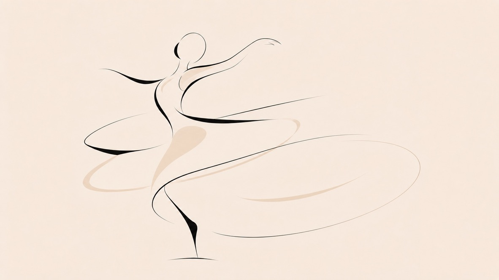

01 / MYTH & CREATION把神话里的创造，
把神话里的创造，
变成眼前的瞬间。
女娲塑形、仓颉造字、伏羲奏乐。我把熟悉的人物放进创造的现场，让动作、器物与山水一起讲述故事。
主题构想 · 画面叙事 · 系列视觉
看九幅作品与伏羲短片神话中的创造瞬间、可信的幻想生物、简洁的人物线条，还有从文化里长出的概念球鞋。
女娲塑形、仓颉造字、伏羲奏乐。我把熟悉的人物放进创造的现场，让动作、器物与山水一起讲述故事。
主题构想 · 画面叙事 · 系列视觉
看九幅作品与伏羲短片
我最在意的是融合的合理性。花与鸟、树与象，要成为一个说得通的生命，让人看到后觉得它可能真的存在。
生物概念 · 形态融合 · 场景气氛
看幻想生物 · 7 幅作品
用线条的轻重、留白和少量色块，表现坐姿的安静、舞蹈的旋转与运动的张力。这一组也从静态图像延伸到动态。
人物表现 · 线条与构图 · 动态视觉
看极简人物 · 图像与短片
中国主题用红金与蜿蜒的线条，回应龙与山川；巴西主题把叶脉和羽毛般的纹理放进鞋面。主题也体现在鞋的造型与材质里。
主题设定 · 视觉方向 · AI 辅助制作
看 Q&G 代表系列